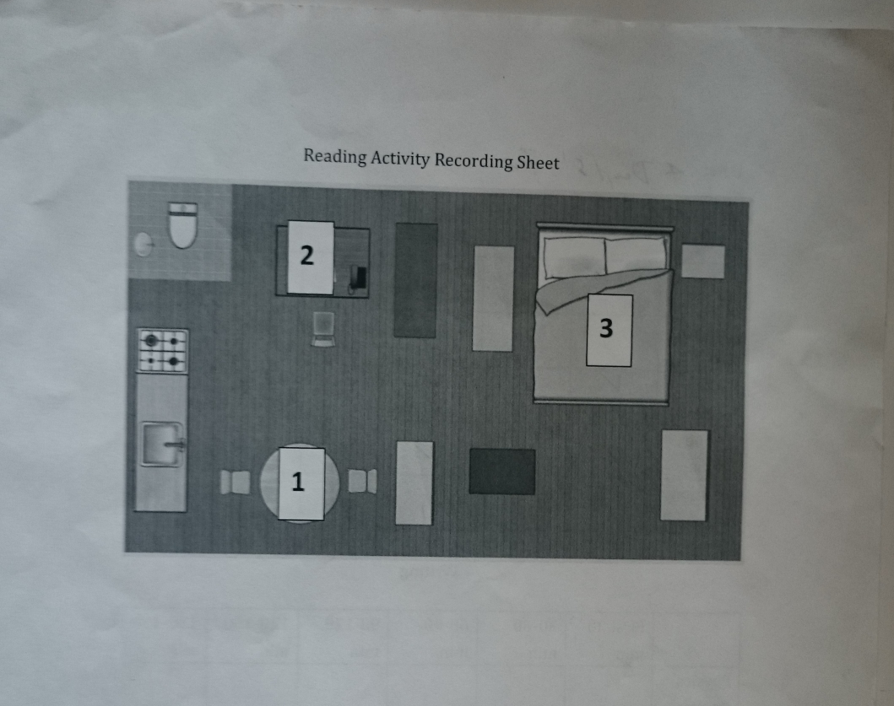
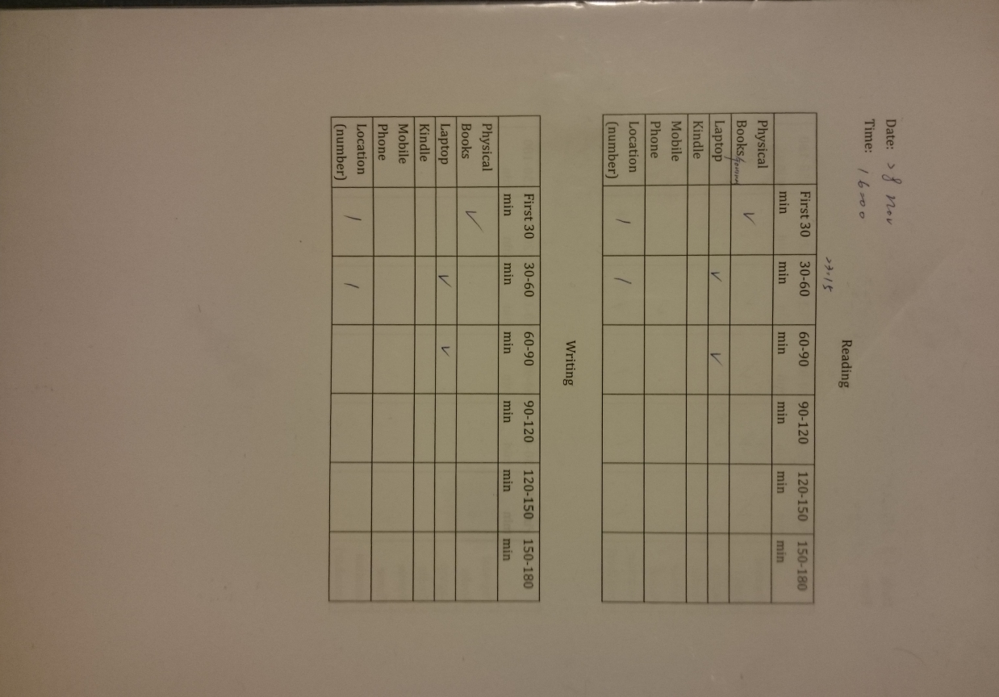
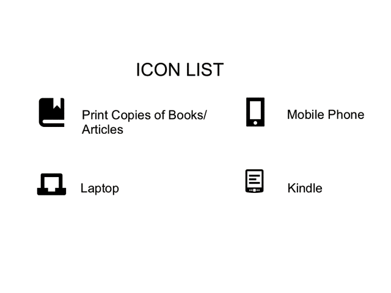

Interview
Interviews were conducted during my first and final visits of C's home. I used semi-structured interviews since I felt that a fixed set of questions would disrupt the atmosphere of the domestic space where things should be flexible.
The interview data was frequently cited to support my arguments on this blog mainly because there were transcripts from which I can easily find quotations. The other materials require a deeper level of interpretation.
It was important, however, not to draw conclusions solely from interviews. Other sources of data can be used to be cross-referenced with interviews, and further insight emerge from the comparison1.
Diaries were also used to see how the participant's reading habits evolve over time. I incorporated the map I made for the flat and showed her how to record her reading habits on the sheets of paper (the format she preferred to the electronic copy).


Diaries
C's kept a 10-day diary of her reading hours and the devices used. I have transformed her records into the animation below.

Some noteworthy points:
- As she had revealed earlier, Kindle was rarely used, and it was confirmed in the diary.
- Reading was not confined in the living room. When her energy level was low, she took reading to bed.
- The functions of the two rooms became mixed according to her mood.
- Still, laptop and mobile phone use stayed in the living room.